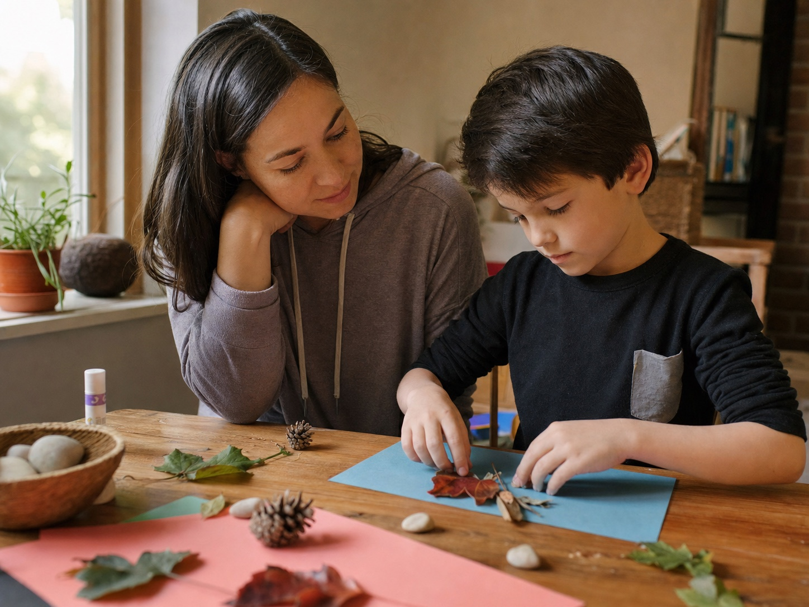

Return to core practices
Revisit approaches children already encountered in Children’s Workshop I or II, with time to practise and settle them.
A steady weekly Zoom space for children to revisit what they have learned, practise with guidance, and bring questions from practice and everyday life.
Each live session makes room for familiar techniques, thoughtful new practices, and practical guidance. This is a continuation space—not an introductory workshop.
Revisit approaches children already encountered in Children’s Workshop I or II, with time to practise and settle them.
Receive age-appropriate new practices and reflective prompts that build on the existing foundation.
Children can receive guidance around their practice and the everyday situations they are navigating.
A consistent weekly rhythm supports integration between sessions and a deeper relationship with the work.

Please have a blindfold, water, and the child’s home-practice set ready before the session begins.
Classes begin Saturday, 29 August 2026 at 8:00 PM Singapore / Kuala Lumpur / China time (UTC+8). A parent or guardian completes the booking and enters the child’s name at checkout.
Four weekly sessions
29 August, 5 September, 12 September, and 19 September 2026. Renewal is due after each four-session cycle.
Twelve weekly sessions
Every Saturday from 29 August through 14 November 2026: twelve live weekly sessions.
Payment is completed securely through Stripe. Your confirmation includes the Zoom link and practical details for the first session.
It is exclusively for children who have already completed Children’s Workshop I or Children’s Workshop II with Rainbow Sanctuary.
Sessions run each Saturday at 8:00 PM UTC+8: 7:00 PM in Thailand, Jakarta, and Vietnam; 8:00 AM Panama; and 9:00 AM New York during daylight saving time.
The guardian receives an email immediately with the Zoom link, the included dates, and simple preparation. A one-hour reminder is also sent before each included session.
Please prepare a blindfold, water, and the home-practice set. Guardians remain responsible for a suitable, supported environment for their child.